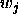
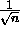

Each component  of each Kohonen weight vector
of each Kohonen weight vector

is set to the value of
, thus yielding all identical weight vectors of length 1. This is no problem, because the
Kohonen algorithm will quickly pull weight vectors away from this
central dot and move them into the proper direction.
of length 1. This is no problem, because the
Kohonen algorithm will quickly pull weight vectors away from this
central dot and move them into the proper direction.